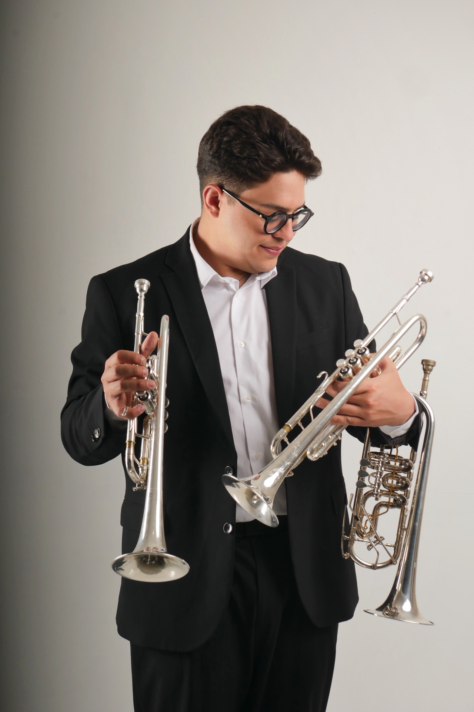
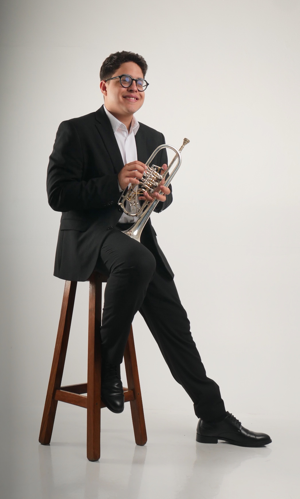

El arte del sonido
y la orquestación.
Forjado en El Sistema de Venezuela y perfeccionado en el Conservatorio Nacional Superior de París. Una técnica sinfónica de altísimo nivel, consolidada al asumir como trompetista solista de la prestigiosa Orquesta Nacional de Lyon.
Trayectoria

Nacido en Caracas en el 2001, inició su formación en el Sistema Nacional de Orquestas de Venezuela. Su virtuosismo lo llevó rápidamente a la Orquesta Sinfónica Nacional Infantil, actuando bajo la batuta de Sir Simon Rattle en el Festival de Salzburgo (2013) y de Gustavo Dudamel.
Ha participado en festivales de gran prestigio en Austria, Italia y Grecia junto al Ensamble de Metales de Venezuela, puliendo su técnica en masterclasses exclusivas con leyendas del instrumento como David Guerrier, Eric Aubier y Pacho Flores.
Tras perfeccionar su arte en el Conservatorio Nacional Superior de París desde 2022 con los maestros Alexandre Baty y Stephane Gourvat, ha actuado como invitado en la Orchestre Philharmonique de Radio France y la Ópera Nacional de París.
Trompetista Solista | Orquesta Nacional de Lyon
Heredera de una sólida tradición musical fundada en 1905, la Orquesta Nacional de Lyon (ONL) destaca como uno de los conjuntos sinfónicos más dinámicos de Europa. Eugenio Carreño Jr. aporta su brillantez interpretativa a este conjunto célebre por su excelencia, versatilidad y proyección internacional.
Reconocimientos
"This is a testament to his innate, powerful artistry and his musical intelligence. He is the very embodiment of our belief in El Sistema that music is a fundamental human right."
Gustavo Dudamel
Music Director, LA Phil / New York Philharmonic"El Joven Carreño posee un gran dominio técnico y sobre todo un Gran Corazón Musical. Su enfoque interpretativo apunta a un gran respeto por la música, a través de una interpretación clara y precisa."
Pacho Flores
Solista InternacionalContacto

Disponible para compromisos orquestales, proyectos de cámara y oportunidades de grabación a nivel internacional.